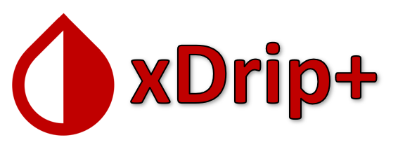
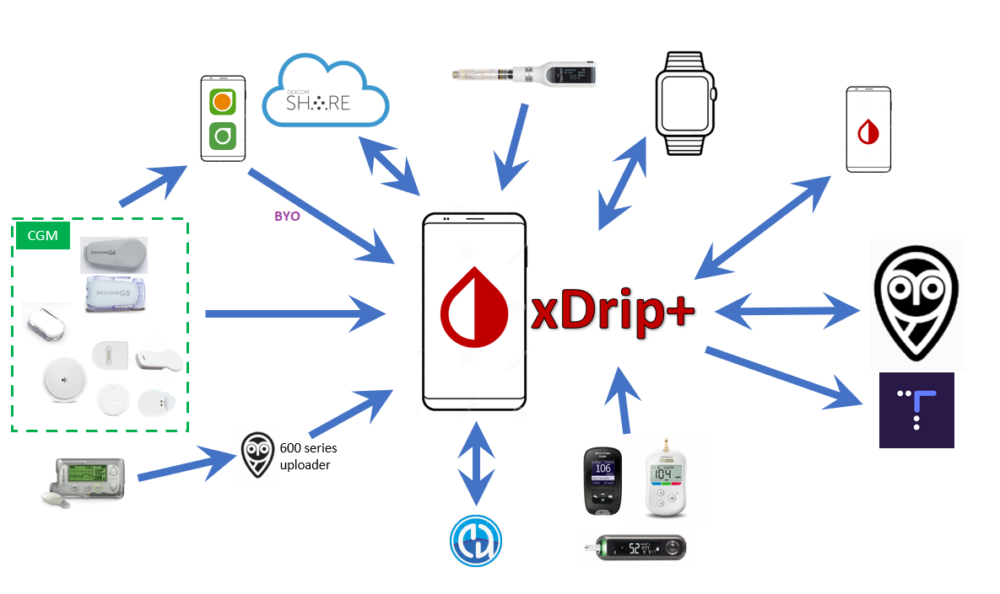

Welcome to the xDrip+ documentation
How to install xDrip+
Prerequisites
Which one to install?
Install xDrip+
Select your data source
What is xDrip+?

xDrip+ is an unofficial and independent Android app which works as data hub and processor between many different devices.
It supports wireless connections to G4, G5, G6, Medtrum A6, Libre via NFC and Bluetooth, 630G, 640G, 670G pumps and Eversense CGM via companion apps. Bluetooth Glucose Meters such as the Contour Next One, AccuChek Guide, Verio Flex & Diamond Mini as well as devices like the Pendiq 2.0 Insulin Pen.
Heart-rate and step counter data is processed from Android Wear, Garmin, Fitbit and Pebble smart-watches and watch-faces for those that show glucose values and graphs.
On some Android Wear watches, it is possible for the G5 or G6 to talk directly to the watch so it can display values even when out of range of the phone.
The app contains sophisticated charting, customization and data entry features as well as a predictive simulation model.
Instant two-way synchronization is possible by linking follower handsets, data can also be uploaded and downloaded to a Nightscout web service or uploaded directly to Tidepool, MongoDB or InfluxDB.
Customization allows for different options to configure alarms, vocalize readings, change the display preferences etc. International users can update translations from within the app too.
Your data is yours and can be exported in many different ways. xDrip also intercommunicates with other apps, for example sending and receiving live data with AndroidAPS.
History
DexDrip was created by Emma Black in 2014 and then became xDrip, an app collecting CGM data from a Dexcom G4 transmitter or a Wixel and sending them to Nightscout. It also came with the follower app Nightwatch.
This project was then modified by @jamorham to become xDrip+.
Personal research version of xDrip

xDrip+ is published by the Nightscout Foundation.